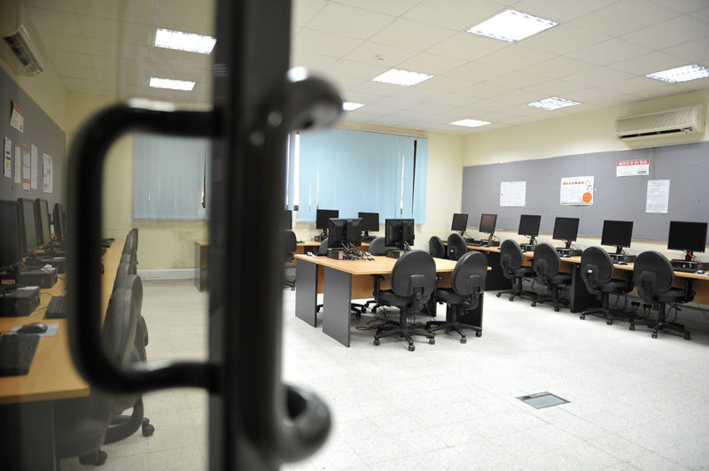

Technology
How can digital tools, data and systems solve practical problems?
SUBTOPIC 02 / STUDY
A starting point for discovering how study can connect ideas with practice.
02 — STUDY
LEARNING IN PRACTICEA WAY TO LEARN 01 / 02
Practical learning often combines instruction with projects, discussion, research and opportunities to apply concepts. In a polytechnic setting, connecting theory to practice is a useful way to think about how education can prepare people for work and further study.
This page is an introductory coursework overview rather than an authoritative programme catalogue. Programme names, availability, admission requirements and fees can change; check the official university information before making decisions.
A FEW DIRECTIONS 02 / 02
Use these subject areas as prompts for exploration. They are examples for this class project, not a guarantee that a specific award is currently offered.
How can digital tools, data and systems solve practical problems?
How do organisations create useful services and experiences?
How can people design, build and improve the world around them?
Check the current official Bahrain Polytechnic website for confirmed study programmes and application details.
NEXT: PLAN A VISIT